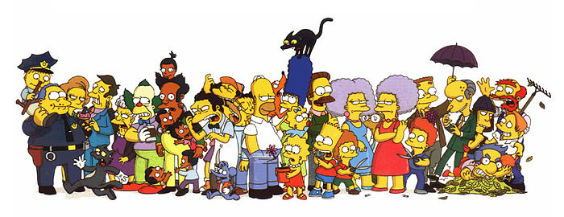
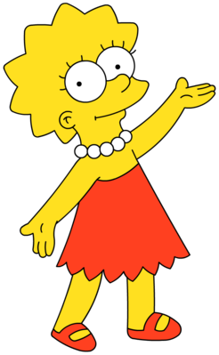

Сімейство Сімпсонів
Сімпсони» (англ. The Simpsons) — американський мультиплікаційний серіал у жанрі ситуаційної комедії, створений
мультиплікатором та карикатуристом Меттом Грейнінгом для телекомпанії Fox Broadcasting Company. «Сімпсони» —
найдовший мультсеріал в історії американського телебачення, що безперервно виходить із 1989 року; у вересні 2021
року розпочалася трансляція 33 сезону серіалу.Мультсеріал у сатиричному ключі показує життя сімейства Сімпсонів та
інших мешканців вигаданого містечка Спрінгфілд, висміюючи багато кліше та стереотипи, зокрема — стиль життя
«середнього американця», особливості світових культур загалом, знаменитостей і навіть саме телебачення та телеканал
«Fox» . Серіал не соромиться торкатися таких слизьких питань, як політика та релігія: зокрема, порушувалися теми
одностатевих шлюбів, боротьби дарвіністів та креаціоністів, війни в Іраку, ювенальної юстиції, політкоректності,
фемінізму, права громадян на зброю, легалізації наркотиків тощо.
Гомер Джей Сімпсон
Гомер та його дружина Мардж мають трьох дітей: Барта, Лізу та Меггі. Як годувальник сім'ї Гомер працює на
Спрінгфілдській атомній електростанції. Гомер втілює в собі кілька американських стереотипів робітничого класу:
він є неохайним, некомпетентним, незграбним, лінивим, сильно п'ючим і неосвіченим,страждає надмірною вагою,
проте по суті вона також порядна людина, сильно віддана своїй сім'ї. Незважаючи на приміське рутинне життя синіх
комірців у серіалі він має низку
чудових переживань. Зазвичай носить біле поло, сині джинси та сірі черевики. Їздить на рожевому седані. Хрещений
батько Гомера молодшого.
Марджорі Жаклін (Мардж) Сімпсон
 Зазвичай носить зелену сукню, червоні балетки, на шиї — намисто зі штучних перлів і їздить на
помаранчевому універсалі. У неї шикарне синє волосся, яке вона зазвичай збирає в дуже високу зачіску. Очі
кольору горіха (19s6e). Основне заняття — домогосподарка, більшу частину часу проводить у турботі про
будинок, дітей та Гомера. Мардж копіює стереотип провінційної американської домогосподарки 50-х років. Мардж
– єдиний член сім'ї, який відвідує церкву добровільно. Намагається підтримувати моральність як своєї сім'ї, а й
усього міста. Відмінно готує, особливо славляться її свинячі відбивні та зефір. Улюблена страва – локшина з
олією.
Зазвичай носить зелену сукню, червоні балетки, на шиї — намисто зі штучних перлів і їздить на
помаранчевому універсалі. У неї шикарне синє волосся, яке вона зазвичай збирає в дуже високу зачіску. Очі
кольору горіха (19s6e). Основне заняття — домогосподарка, більшу частину часу проводить у турботі про
будинок, дітей та Гомера. Мардж копіює стереотип провінційної американської домогосподарки 50-х років. Мардж
– єдиний член сім'ї, який відвідує церкву добровільно. Намагається підтримувати моральність як своєї сім'ї, а й
усього міста. Відмінно готує, особливо славляться її свинячі відбивні та зефір. Улюблена страва – локшина з
олією.
Бартоломью Джо-Джо «Барт» Сімпсон
Бартолом'ю Джо-Джо "Барт" Сімпсон (англ. Bartholomew Jo-Jo "Bart" Simpson) - герой мультиплікаційного серіалу
"Сімпсони". Поряд із Гомером, один із найяскравіших проявів шоу. У списку п'ятдесяти найкращих мультиплікаційних
героїв в історії за версією журналу TV Guide займає 11-у сходинку сукупність зі своєю сестрою Лізою. Отримав
своє
друге ім'я на честь свого двоюрідного діда та дядька Мардж.
Барт вперше з'явився на екрані 19 квітня 1987 року в короткометражній серії "На добраніч".
Ліза Марі Сімпсон

Ліза Марі Сімпсон (англ. Lisa Marie Simpson) — героїня мультиплікаційного серіалу «Сімпсони». Середня дитина в
сім'ї,
восьмирічна дівчинка, що виділяється серед інших Сімпсонів насамперед своїм розумом і розважливістю.Ліза як
персонаж з'явилася з-під олівця Метта Грейнінга в момент, коли він очікував на аудієнцію в приймальній компанії
FOX. «Сімпсонів» тоді ще не існувало, але в останній момент Метт вирішив не продавати існуючий бренд, а створити
з нуля новий, так і з'явилася на світ Ліза та її родина. Ім'я дівчинці він дав на честь однієї зі своїх сестер.
Вперше вона з'явилася 19 квітня 1987 року в короткометражній серії Good Night, показаній в Шоу Трейсі Ульман. У
цій серії Ліза була досить самостійним персонажем, а швидше була подобою свого брата Барта, але надалі її образ
розкривався і змінювався протягом 21 сезону.
Вся інформація та картинки взято з Wikipedia та перекладено на
українську за допомогою Google :)